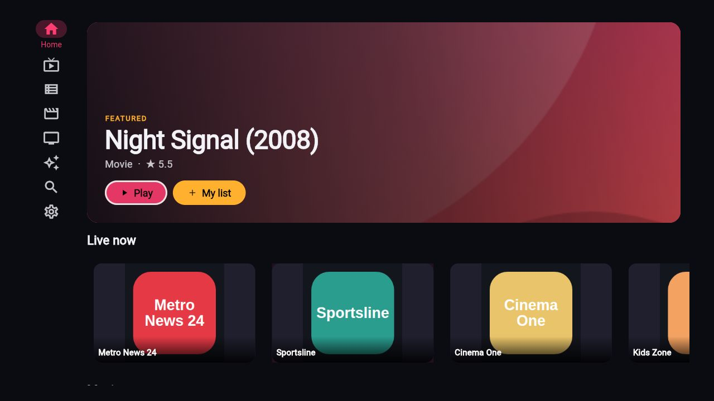
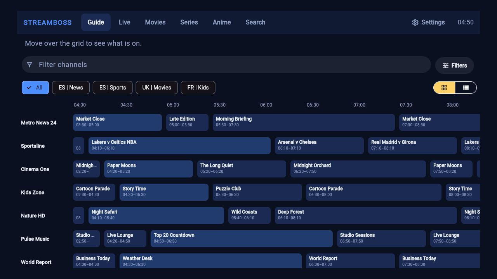
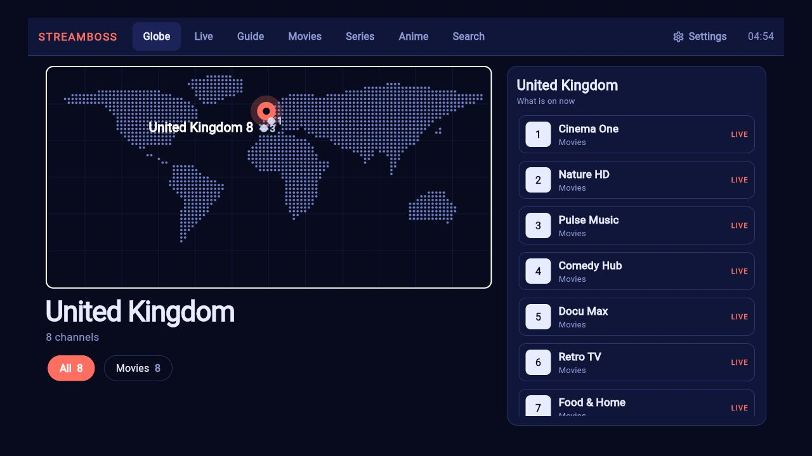
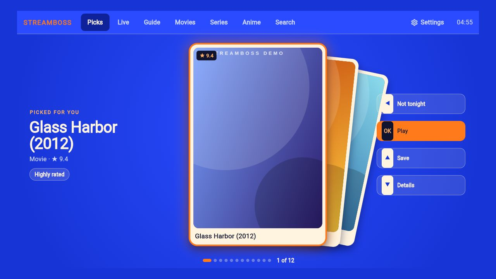
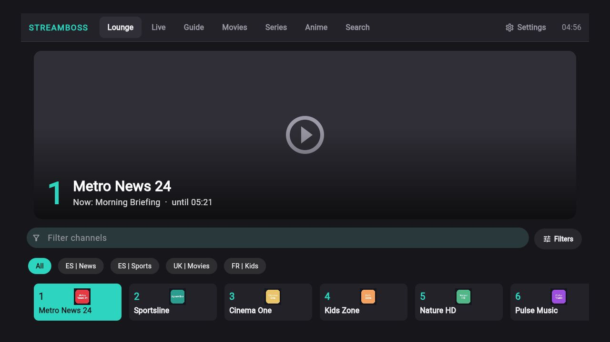
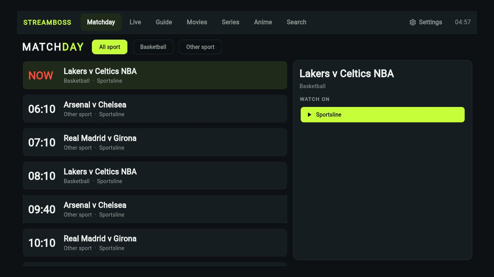
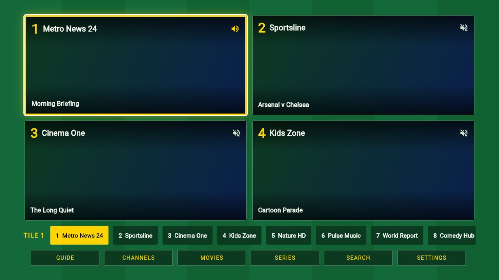
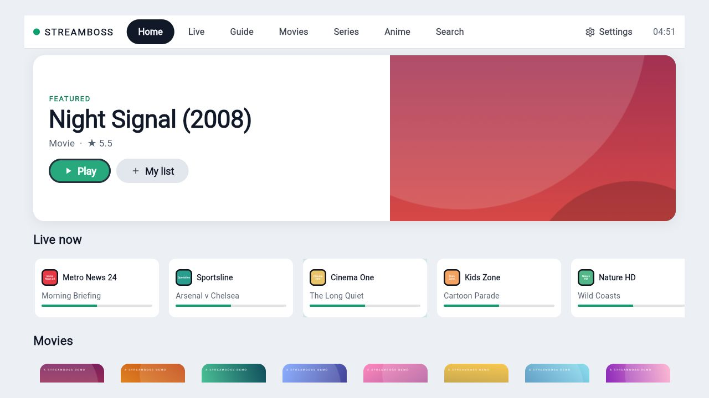
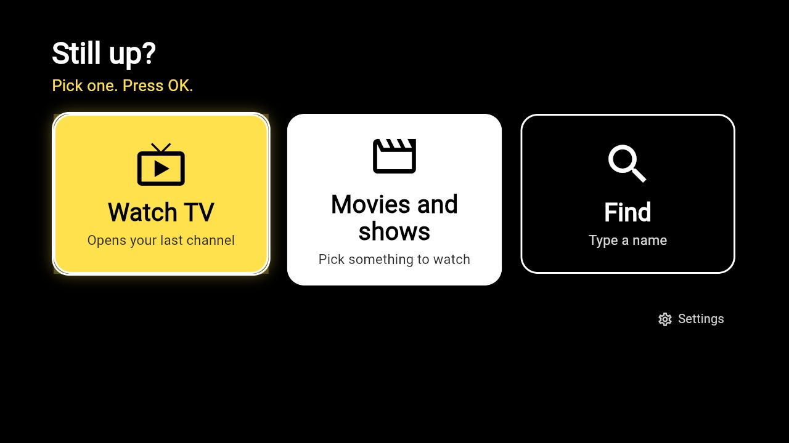

Bring your own provider. We just play it.
StreamBoss is a TV player for the Xtream or M3U service you already pay for. Pick a layout, point it at your provider, and watch live channels, movies and series from the couch.

Pick your screen
Use the arrow keys or tap. Each screen shows the quickest way on.
Made for the remote
Twenty-one homes. Pick the one that fits the room.
A poster wall, a TV guide, a cable-box channel surfer, a dial, a prompt, a deck of picks. Change it in Settings and the whole app follows, with its own colors and navigation.

A guide that knows what is on.
Programme guide from your provider, catch-up where the provider keeps an archive, reminders that notify you before a show starts, and a one-press way back to the last channel.

The same app in your pocket.
Every layout has a phone version. Continue watching on Android TV's home screen, search by voice, and keep your lists and positions in step across devices through a sync server you run yourself.


Same app, very different rooms.

Console 
Globe 
Deck 
Lounge 
Matchday 
Mosaic 
Daylight 
Easy
What it is not
Said plainly, so nothing surprises you after you install.
Player only.
StreamBoss ships with no channels, no movies and no subscriptions. You sign in with a service you are licensed to watch, and the stream goes from your provider to your screen. There is no StreamBoss account to make.
Before you install
Does it come with channels?
No. You bring an Xtream Codes login or an M3U playlist from a service you are licensed to use. Without one you can try the demo mode, or browse public lists of free channels kept by third parties.
Do I need an account with you?
No. Sync between devices is optional and goes through a small server that you host. Provider passwords never leave a device.
Will it work on my Roku?
Yes, as a separate native channel. A small installer program opens a page in your browser, finds your Roku and puts the channel on it, so you do not have to use the Roku's upload page.
What does it send over the internet?
Your login goes to your provider and nowhere else. If you use them, it also contacts TMDB (posters and details, with your own key), OpenSubtitles (subtitles, with your own account), a public list of free channels, this website (to look for a new version) and a sync server you run yourself. There is no analytics or advertising code in it.
Can I use it in a browser?
Yes: web.streamboss.site. Nothing to install. A browser has two limits the apps do not: it refuses a plain http:// provider on a secure page, and any server that does not allow websites to read it. StreamBoss tells you which one it was. If your provider is blocked, use the app for your device.
How do I update?
In the app: Settings, About, Check for updates. It downloads and installs inside the app.